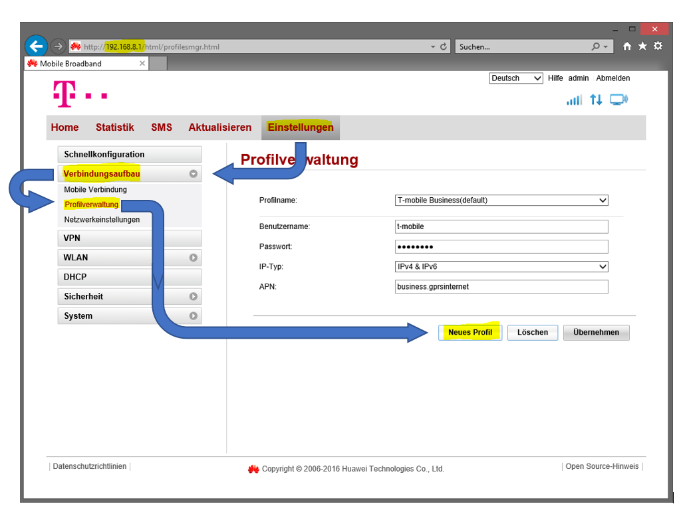

Ich habe 2 Fragen/Probleme zum Huawei B525s-23a LTE-Router:
1) Ich habe eine Netzwerkfestplatte, der ich eine bestimmte IP zuweisen muss. Leider habe ich in der Konfigurationsseite vom Router noch keinen passenden Eintrag gefunden. Wo kann ich diesem Gerät eine fixe IP-Adresse zuweisen?
2) Bei der Konfiguration meiner etwas älteren X-Box 360 bekam ich folgenden Netzwerkfehler (siehe Anhang). Das freischalten des Portes 3074 auf TCP und UDP hat leider nichts gebracht. Nun wollte ich fragen, wo man in der Konfigurationsseite des Router UPnP aktivieren kann.
Leider habe ich noch keine passenden Einstellungen für beide Probleme gefunden. Ich hoffe Ihr könnt mir helfen.
MFG; Clemens
SigiBlue
vor 5 Stunden schrieb Clemens Thaler:
1) Ich habe eine Netzwerkfestplatte, der ich eine bestimmte IP zuweisen muss. Leider habe ich in der Konfigurationsseite vom Router noch keinen passenden Eintrag gefunden. Wo kann ich diesem Gerät eine fixe IP-Adresse zuweisen?
hallo!
die fixe ip wird nicht am router sondern am nas eingestellt. zuvor guckst du aber bitte am router unter: "einstellungen-DHCP" nach. da sollte ein DHCP-IP-Bereich sein. zb. 100-200 was bedeutet, dass in deinem heimnetzwerk der router die adressen zb. 192.168.1.100 bis 192.168.1.200 automatisch vergibt und deshalb für den router reserviert sind. davon solltest du keine für dein nas vergeben ebenso nicht die 192.168.1.1; such dir in diesem fall was zwichen zb. 10 und 99 bzw. 201 und 250. deine ip der wahl trägst du dann in deinem nas ein. wenn du die type hast, können wir dir dabei viell sogar helfen. da fehlt noch ein bisschen was aber fürs erste will ich dich nicht schon überfordern
als kleine orientierungshilfe sieh dir die screenshots an.
2) Bei der Konfiguration meiner etwas älteren X-Box 360 bekam ich folgenden Netzwerkfehler (siehe Anhang). Das freischalten des Portes 3074 auf TCP und UDP hat leider nichts gebracht. Nun wollte ich fragen, wo man in der Konfigurationsseite des Router UPnP aktivieren kann.

meines wissens können die t-mobile geräte kein UPnP..
hoffe es war nicht zu viel und nicht zu kompliziert für dich erklärt!
lg
Bearbeitet
von 5igi3lue
Zeilenumschaltung angepasst
Clemens Thaler
Danke 5igi3lue für deine Hilfe, dass mit NAT hat jetzt funktioniert.
Nun aber nochmal zum Problem mit der IP:
Ich habe die Festplatte immer direkt beim vorherigem Router (A1) angeschlossen und ihr einmal eine feste IP zugewiesen die man an der Festplatte nicht ändern kann(192.168.0.50). (Den DHCP Bereich habe ich schon soweit umgestellt und müsste der Festplatte, wenn die sich im Netzwerk meldet, ihr die statische IP zuweisen.) Nun müsste ich ihr auch beim neuen T-Mobile Router diese IP "reservieren", dass wenn sich die Festplatte im Netzwerk meldet, sie genau diese IP vom Router bekommt.
Vielen Dank für die Hilfe im Voraus,
MFG; Clemens
SigiBlue
hallo nochmal clemens,
hmmm, also ich sehe das so, dass du am router nichts mehr einstellen brauchst, wenn die nas eine fixe ip hat bzw. du sie am nas garnicht ändern kannst (bisschen komisch, da es ja auch andere netze gibt zb. 10.0.0.xx etc.). bei den beiden t-mobile routern die ich habe (Huawei B525 und Huawei B315), kann man meines wissens keine einzelnen adressen reservieren, lediglich den bereich, wie schon besprochen. ergo sollte alles klappen, wenn die ip vom nas nicht in den DHCP-IP-Bereich vom router fällt. bitte korrigier mich
@Phil
wenn ich falsch liege. wichtig ist allerdings, dass kein anderes netzwerkgerät die ip vom nas hat, das würde sich sonst gewaltig "spießen"!!
magst uns viell doch mal die geräte type vom nas geben, würd ich dann mal "googlegucken"
lg
Clemens Thaler
Am 7.3.2018 um 21:04 schrieb 5igi3lue:
hallo nochmal clemens,
hmmm, also ich sehe das so, dass du am router nichts mehr einstellen brauchst, wenn die nas eine fixe ip hat bzw. du sie am nas garnicht ändern kannst (bisschen komisch, da es ja auch andere netze gibt zb. 10.0.0.xx etc.). bei den beiden t-mobile routern die ich habe (Huawei B525 und Huawei B315), kann man meines wissens keine einzelnen adressen reservieren, lediglich den bereich, wie schon besprochen. ergo sollte alles klappen, wenn die ip vom nas nicht in den DHCP-IP-Bereich vom router fällt. bitte korrigier mich
@Phil
wenn ich falsch liege. wichtig ist allerdings, dass kein anderes netzwerkgerät die ip vom nas hat, das würde sich sonst gewaltig "spießen"!!
magst uns viell doch mal die geräte type vom nas geben, würd ich dann mal "googlegucken"
lg
Nocheinmal zu diesem Problem:
Ich verwende und habe auch kein NAS!
Bei dem A1 Router, welchen ich aufgrund der Geschwindikeit gegen den schnelleren T-Mobile Router ausgetauscht habe, konnte man jedem Gerät eine fixe IP zuweisen. Das heißt, wenn sich das jeweilige Gerät nach dem Einschalten im Netzwerk gemeldet hat, es vom Router eine vordefinierte IP Adresse bekam. (Die IP's wurden dementsprechend definiert, sodass es zu keinen Kollisionen kam).
Nun möchte ich dies auch beim neuen T-Mobile LTE Router machen.
Leider habe ich aber in den Einstellungen keinen passenden Eintrag gefunden.
Nun möchte ich fragen wo ich einigen Geräten eine fixe IP Adresse im Netzwerk zuweisen kannn da ich auf der normalen Einstellungsseite noch nichts passendes gefunden habe. (Im A1 Router hat mam dafür Super-Admin Login gebraucht)
MFG; Clemens
SigiBlue
Am 5.3.2018 um 16:41 schrieb Clemens Thaler:
Ich habe eine Netzwerkfestplatte, der ich eine bestimmte IP zuweisen muss.
hallo clemens!
dann hab ich da wohl was falsch verstanden. verwendest du womöglich einen externe festplatte die am router per usb angeschlossen ist? falls nicht, bitte erklär was du mit netzwerkfestplatte meinst.
ich wüsste nicht, dass man beim Huawei B525s anderen netzwerkgeräten eine ip zuweisen kann. aber ich kenne das auch von A1 als ich noch kunde war.
lg
Clemens Thaler
vor 59 Minuten schrieb 5igi3lue:
hallo clemens!
dann hab ich da wohl was falsch verstanden. verwendest du womöglich einen externe festplatte die am router per usb angeschlossen ist? falls nicht, bitte erklär was du mit netzwerkfestplatte meinst.
ich wüsste nicht, dass man beim Huawei B525s anderen netzwerkgeräten eine ip zuweisen kann. aber ich kenne das auch von A1 als ich noch kunde war.
lg
Hallo nochmal:
Es geht mir hier nicht um die Festplatte sondern wie man einem Geräte eine fixe/statische IP Adresse zuweisen kann.
Aber anscheinend gibt es diese Funktion bei meinem B525 LTE Router nicht.
Falls es doch irgendeine Möglichtkeit gibt, wäre ich über jeden Ratschlag sehr dabkbar.
MFG; Clemens
SigiBlue
vor 3 Stunden schrieb Clemens Thaler:
Es geht mir hier nicht um die Festplatte sondern wie man einem Geräte eine fixe/statische IP Adresse zuweisen kann.
hallo nochmal
mit dem b525 router klappt das nicht.
fixe ip adressen werden in der regel am endgerät eingestellt.
lg
Clemens Thaler
vor 6 Stunden schrieb 5igi3lue:
hallo nochmal
mit dem b525 router klappt das nicht.
fixe ip adressen werden in der regel am endgerät eingestellt.
![20180225_115404[1].jpg](images/uploads/5a9d64bfb565b_20180225_1154041.jpg.bf18d4e2ccbc08a67ccbf62543ef9cda.jpg)
{kind=link}
{kind=link}
{kind=link}